2026-11-16 · drawn with VectorCraft in the family of the sample (docs/icons/sample), version B (the picture at 118%, over the octagon's edge). Today's icon on the left, the new one on the right, each drawn the way the game draws it: a 128 px picture brought down to 64, 48 and 32 px. The last of each set is the new one in grey.
What I see
Most of this batch had good icons already (Opaline, Isolde, Vesper read well today); the new ones bring them into the family and give each a sign of its own: Silvane's silver-framed mirrors, Opaline's amethyst crystals and split light, Zephyr's wind crescents and feather, Fenna's flowers and vines, Isolde's ice and snowflake, Vesper's blood and gold chalice, Sirix's wasps and honeycomb, Ada's brass gears and cyan-eyed machines.
Weakest: Silvane's Hand Mirror (Q) is small at 32 px, its bounce line thin. Zephyr's Crosswind (Q) and Skyward (W) are both wind arcs at 32 px. Sirix's Swarm Cloud (E) and Swarm Surge (R) are many small wasps: busy at 32 px, though the ring and the column tell them apart; his Barbed Stinger (Q) reads a little like an ear of wheat.
Redrawn after a first look: Isolde's Winter's Shatter (its Chill pips sat in the key letter's corner).
At 32 px
Each spell: today · new · new in grey · new under the desktop bar's key letter · new in the phone's round slot; brought down to 32 px, then shown twice larger.
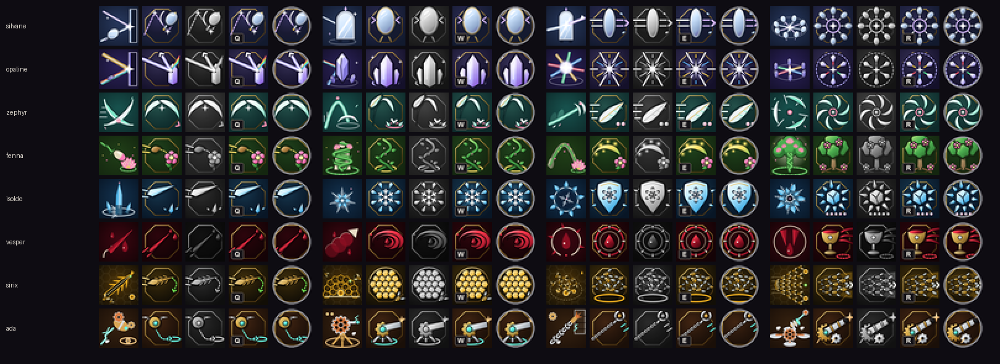
Silvane the Mirror Duchess
Proposed row Mirror (src/kits/mirror.ts): the glass's pale blue, violet as the accent, silver foils.
corehotbodyaccentdark
SpellTodayNew
QHand MirrorA spinning hand mirror (10 m): 64 damage, +25% for each of up to three bounces. A mirror that lands after a bounce lies 2.5 s: walk within 1 m to catch it, and Hand Mirror is ready again.
WVanity StandA standing mirror at a spot (8 m) for 6 s, or until 60 damage breaks it. It blocks walking, sight and bolts, and her mirrors bounce off it. Whoever breaks it has Bad Luck: 15% less damage for 7 s.
EThrough the GlassStep into her Stand and out of the far side, up to 9 m in all. With no Stand, a 3 m step toward the aim.
RHall of MirrorsShe spins and throws eight mirrors outward in a ring (12 m): 60 damage each, bouncing twice. Stand in a gap. Up to four that land can be caught: each cuts 2 s off this spell.
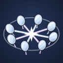
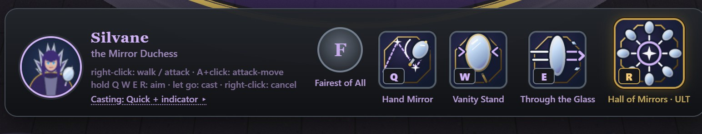
The spell bar, desktop (1280 wide)
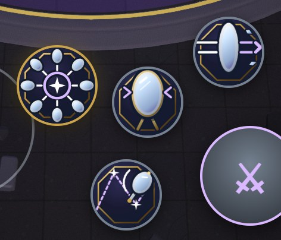
Phone (375 wide)
Opaline the Lightbreaker
The art bible's Prism row, its spectrum as the accent; amethyst and cream for her crystals (her revamp's colours).
corehotbodyaccentdark
SpellTodayNew
QRicochet LightA bolt of light (12 m) that bounces off up to two walls, pillars or crystals: 64 damage, +25% for each bounce. A hit after bouncing takes 1 s per bounce off this spell.
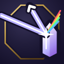
WCrystalA crystal rises at a spot (8 m) for 6 s, or until 80 damage breaks it. It blocks walking, sight and bolts for both of you, and her bolts bounce off it.
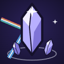
EBlinding FlareA flash of light (3 m) round her: enemies in it are blinded for 1.5 s and pushed 2 m away.
RShatterlightClick an enemy (10 m, in sight). Six shards ring the spot they stand on and, after 1.2 s, each fires inward through it: 36 damage each, and each bounces once off a wall. Step out of the ring to dodge.
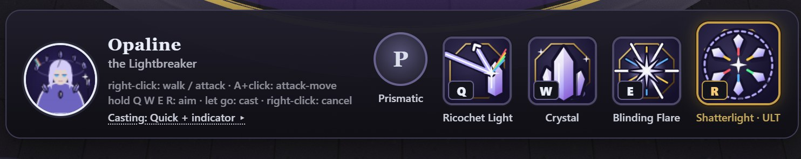
The spell bar, desktop (1280 wide)
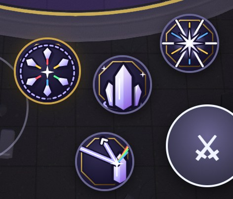
Phone (375 wide)
Zephyr the Wind Blade
The art bible's Sky row, cloud as its foil.
corehotbodyaccentdark
SpellTodayNew
QCrosswindA 3 m cross-cut of wind in front of him: 34 damage. Press Q again within 2 s for a 3 m dash-slash through the aim (23 damage), a dash that gives a Gust.
WSkywardHe leaps into the air, untouchable for 0.6 s, and comes down on a spot within 5 m: 34 damage within 1.4 m and a 0.5 s knock-up. The landing circle shows from take-off. A dash: it gives a Gust and resets his basic attack when he lands.
EFeather StepA quick 4 m step in any direction. Two charges (one back every 7 s), shown as pips round him. A dash: it gives a Gust and resets his basic attack.
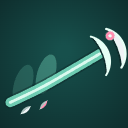
RSky RendUltimate. Click an enemy within 7 m: he marks them and stands for 0.8 s. If he still sees them within 9 m, he vanishes and cuts from every side: 3 cuts plus 2 per Gust he spends (9 at most), 22 damage each, untouchable while they run. He ends behind them and cannot cast for 0.6 s. If the wind-up fails (cover, or too far) it fizzles and he is free.
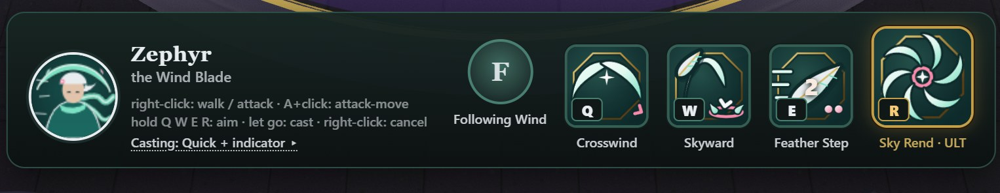
The spell bar, desktop (1280 wide)
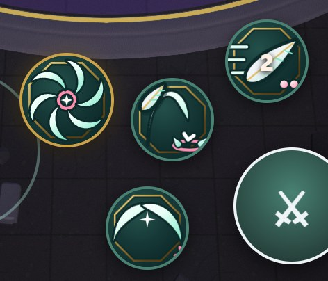
Phone (375 wide)
Fenna the Grove Warden
The art bible's Grove row, the bark's cream as its foil.
corehotbodyaccentdark
SpellTodayNew
QSeed ShotA seed flies 9 m (0.25 s wind-up): 64 damage. A flower grows where it stops, on the enemy or at the end of its flight.
WStrangle VineVines (7 m, needs sight) coil round one enemy: 40 damage and rooted 1.0 s, or 1.4 s within 3 m of a flower.
EPollen GlideShe glides 6 m on a gust of pollen, and a flower grows where she lands. No heal of its own.
RWorld TreeA tree bursts up at a spot (9 m) after 1.2 s and stands 8 s: it blocks walking and bolts, roots an enemy within 3 m as it sprouts, and her flowers within 6 m heal 4 HP a second each instead of 3. Recast: Uproot, a 3 m burst of thorns after 0.6 s: 60.
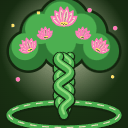
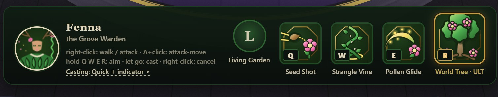
The spell bar, desktop (1280 wide)
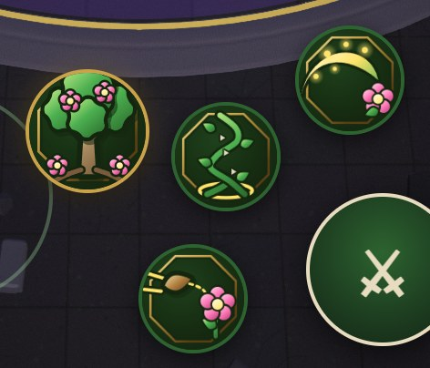
Phone (375 wide)
Isolde the Winter Warden
The art bible's Frost row (rime as its foil).
corehotbodyaccentdark
SpellTodayNew
QIcicleThrows a piercing icicle (11 m): 42 and 2 Chill. It sticks in the floor where it ends for 2 s; recast to shatter it: 26 and 1 Chill within 2 m.
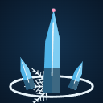
WHoarfrostFrost bites the enemy (8 m, needs sight): 36 and 2 Chill.
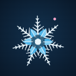
ERime ArmourFor 3 s: +40% armour, and every basic attack that hits her gives the attacker 2 Chill.
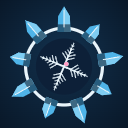
RWinter's ShatterUltimate. Her fist closes on the enemy (9 m, needs sight). 0.8 s later the Chill shatters: 50 plus 30 per Chill (200 at 5), and the Chill is spent. It fizzles if sight is lost.
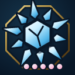
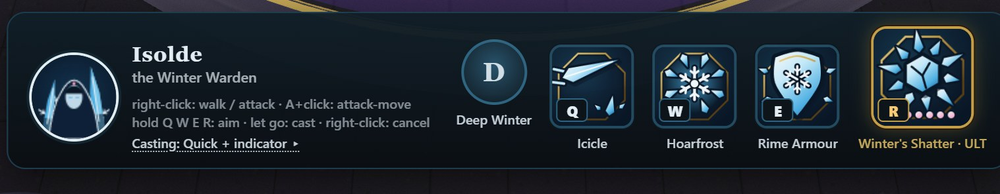
The spell bar, desktop (1280 wide)
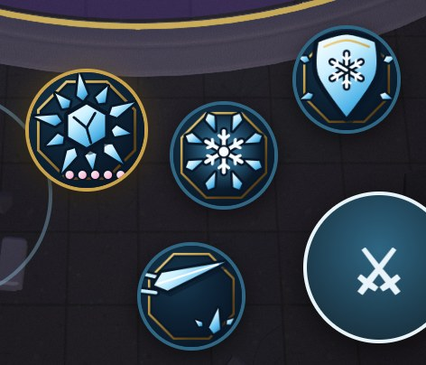
Phone (375 wide)
Vesper the Crimson Countess
The art bible's Blood row, drawn as the art bible's blood rules ask (dark rim, one hot line, a pinpoint highlight, bone near it).
corehotbodyaccentdark
SpellTodayNew
QLancetCosts the Price. A blood needle (7 m): 30 damage, and it stays in for 3 s. From 0.6 s on, cast again to rip it out: 22 more, half the needle's price back, and Lancet is ready again at once. The Rip costs nothing but raises the Price. Only while she sees them within 8 m; a needle left in is lost.
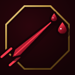
WMist WaltzCosts the Price, no cooldown. She flows 5 m as mist. Her next two basic attacks within 3 s reach 1.5 m farther and deal +18.
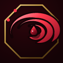
EHemocurseCosts the Price, no cooldown. A curse (7 m): 25 damage, for 3 s. Each spell the enemy casts costs them 15 HP, and if she is Hungry she heals 20. It breaks at 8 m or without sight.
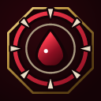
RSanguine FeastCosts twice the Price, once in 11 s. She roots herself and drinks (8 m) for 1.6 s: pulses of 15, 15, then 20 plus 15% of their missing HP, and 45 HP back. A stun or silence, cover, or 9 m of distance ends it.
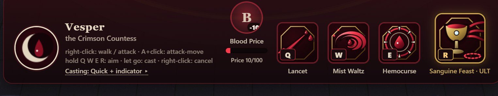
The spell bar, desktop (1280 wide)
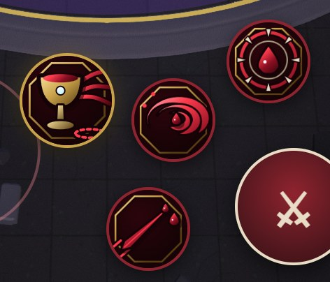
Phone (375 wide)
Sirix the Swarm Warden
The art bible's Hive row, wax as its foil.
corehotbodyaccentdark
SpellTodayNew
QBarbed StingerA stinger flies 8 m: 42, and the barb stays on them for 3 s. Cast it again within 3 s to leap onto the barbed enemy: 25, and with 2 wasps spent it poisons them for 30 over 3 s.
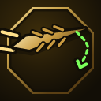
WHive ShellChitin plates close round him: 40% less damage for 3 s. Each hit he takes spends a wasp, which stings the attacker for 15.
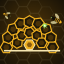
ESwarm CloudAll his wasps fly to a spot 9 m away and hang there for 3 s as a cloud: from 1 s, 7 damage per wasp each second to everyone inside, and blinded. They come back when it ends.
RSwarm SurgeUltimate. He looses every wasp down a 10 m column, 4 m wide: 18 per wasp, shoves 4 m and blinds 1 s. The swarm does not come back: he is a plain fighter afterwards.
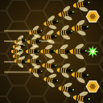
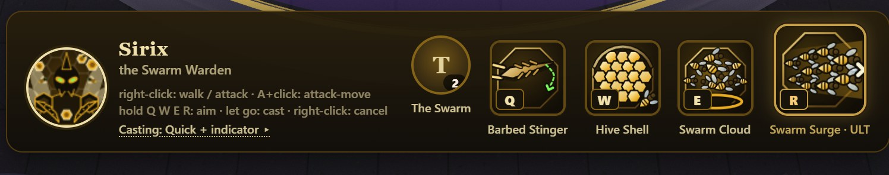
The spell bar, desktop (1280 wide)
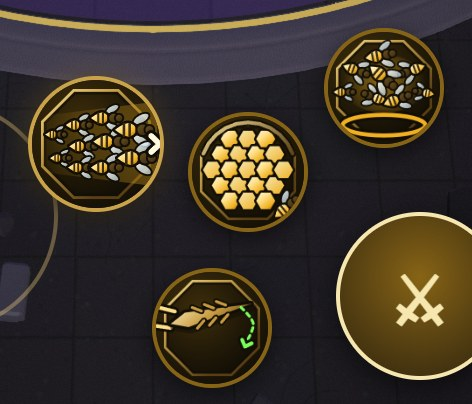
Phone (375 wide)
Ada the Artificer
The art bible's Clockwork row; brass and steel, the cyan spark as the accent.
corehotbodyaccentdark
SpellTodayNew
QHoming DroneClick an enemy within 8 m. A drone flies out and always hits: 45. It tags them for 3 s, and her turrets deal 30% more to a tagged enemy. Needs sight.
WDeploy TurretTwo charges, one back every 10 s. A turret at a spot within 8 m for 8 s: 80 HP, 9 damage every 1.4 s, range 8. Within 5 m of her it shoots 30% faster and glows.
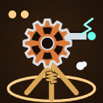
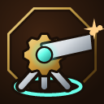
EGrappleA hook (9 m, 0.25 s wind-up). On an enemy: 30 and slowed 1 s, she stays put. On a wall, pillar or her own turret she reels herself to it. It cannot pull the enemy.
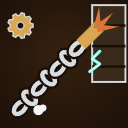
RSiege ModeShe braces for 6 s, rooted, +20% armour. Turrets within 8 m of her fire twice as fast, and she fires heavy rounds (23 every 0.8 s) at an enemy within 9 m she can see. A stun, silence or knock-up ends it. Recast: pack up.
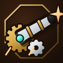
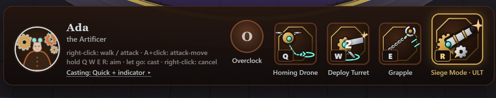
The spell bar, desktop (1280 wide)
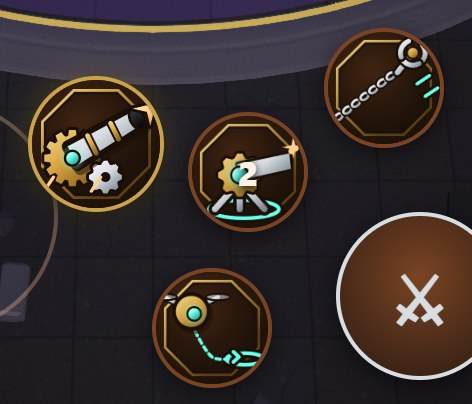
Phone (375 wide)
File sizes
The SVGs the game loads (public/icons/spells/), only when a hero's slots are first drawn.
Icon
SVG
gzipped
silvane-e
4.9 KB
1.0 KB
silvane-q
4.4 KB
1.3 KB
silvane-r
11.3 KB
1.8 KB
silvane-w
4.7 KB
1.0 KB
opaline-e
6.1 KB
1.0 KB
opaline-q
4.1 KB
1.0 KB
opaline-r
7.2 KB
1.4 KB
opaline-w
5.8 KB
1.3 KB
zephyr-e
5.9 KB
1.5 KB
zephyr-q
7.3 KB
1.9 KB
zephyr-r
18.2 KB
4.2 KB
zephyr-w
9.6 KB
2.4 KB
fenna-e
9.5 KB
1.8 KB
fenna-q
7.3 KB
1.4 KB
fenna-r
22.0 KB
3.9 KB
fenna-w
7.2 KB
1.4 KB
isolde-e
8.6 KB
1.4 KB
isolde-q
4.7 KB
1.0 KB
isolde-r
10.3 KB
1.6 KB
isolde-w
9.9 KB
1.3 KB
vesper-e
5.3 KB
1.2 KB
vesper-q
5.7 KB
1.4 KB
vesper-r
6.6 KB
1.4 KB
vesper-w
11.2 KB
2.7 KB
sirix-e
25.9 KB
4.5 KB
sirix-q
4.9 KB
1.0 KB
sirix-r
31.8 KB
4.9 KB
sirix-w
16.0 KB
2.3 KB
ada-e
11.4 KB
2.1 KB
ada-q
5.5 KB
1.1 KB
ada-r
8.7 KB
1.8 KB
ada-w
6.3 KB
1.3 KB
All 32
308.6 KB
59.4 KB
Files: the drawings pipeline/icons/vectorcraft/draw/<hero>.py, the shared rules vclib.py, the runner make.py, this page page.py (batches.json holds the notes).